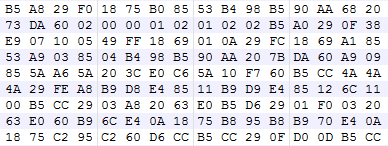
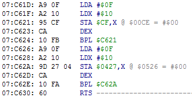

Содержание
Центральным процессором (CPU) является 8-битный микропроцессор на основе MOS Technology 6502.
Размер памяти процессора = 64 KB. Каждая ячейка памяти называется "адрес", в каждом адресе хранится 1 байт. В статьях адреса будут записаны четырьмя символами с префиксом "$".
64 KB = диапазон адресов $0000-$FFFF. У процессора 16-битная адресная шина, что позволяет ему обращаться к любому адресу этого диапазона.
Память разбита на несколько участков. Самыми примечательными являются RAM и PRG ROM. Остальные адреса это зеркала RAM, память батарейки (при ее наличии) и различные регистры (включая их зеркала).
Оперативная память размером 2 KB, она находится в диапазоне $0000-$07FF. RAM служит для хранения динамических данных игрового процесса, таких как количество жизней, координаты объектов, номер уровня, таймеры и прочее. Обычно адрес RAM хранит в себе числовое количество чего-либо.

Каждый отдельный адрес из этих 2048-ми адресов может отвечать за какую-то определенную задачу, или же просто быть свободным (который совсем не используется игрой). Некоторые схожие адреса, например координаты объектов, очень часто находятся по соседству.
Только разработчики игры решают за что будет отвечать каждый из этих адресов, и скорее всего адрес, который отвечает за какую-то функцию, в другой игре будет находиться в совершенно другом месте. Схожее расположение адресов в лучшем случае ты встретишь у игр одной серии, или в играх одной и той же компании.
Несмотря на такое большое количество адресов, найти нужный адрес, который отвечает за определенную игровую функцию, не так уж и сложно.
Чтобы внести в игру некие изменения, нужно повлиять на адрес, который отвечает за соответствующую игровую функцию. Свободные адреса можно использовать самому для хранения каких-то новых динамических данных.
Программа размером 32 KB в диапазоне $8000-$FFFF. Здесь размещен код и игровые данные, например текст, таблица уровней, параметры персонажей и другие. Большинство статичных данных и констант будут храниться именно здесь. Динамические данные находятся в адресах RAM.

Однако крупным играм недостаточно 32 KB памяти, и тогда на помощь приходит маппер. Он позволяет подключать в эту область различные "банки" памяти из файла ROM'а, таким образом в том же диапазоне $8000-$FFFF в другой момент времени может мгновенно оказаться совершенно иной код с данными.
Возможность, метод переключения банков памяти и их размер зависят от маппера.
Обычно массивные игровые программы, такие как отрисовка графики, вычисление физики, музыкальный движок и другие, находятся в отдельных банках и подключаются на протяжении кадра в том порядке, в котором запрограммирован основной игровой скрипт.
Игры для NES написаны на языке ассемблера процессора 6502. Это низкоуровневый язык программирования, в котором программа является байт-кодом. Эти байты интерпретируются как набор команд.

Предназначение данной подпрограммы - записать байт #$0F по адресам $00CF-$00DF и $0427-$0437.
Точкой входа в программу (игру) является 16-битный адрес, младший и старший байт которого указаны в $FFFC-$FFFD. Затем происходит базовая загрузка игры, такая как отрисовка различных игровых экранов и заставок. Дальнейшие игровые события развиваются благодаря нажатию кнопок на джойстике.
Редактируя код игры, можно изменять геймплей и игровые данные. Для этого требуется знание команд и регистров процессора.